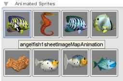
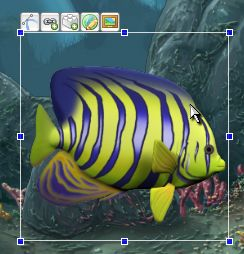
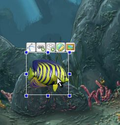

Torque
2D – Fish Demo Tutorial - Part 3
3.
Adding our Fish
3.1 Dropping our fish
animation in
First we must
choose the fish animation we want to start with. A good one to start
with is the first animation in your Animated Sprites object
library (as shown in Figure 3.1.1). Drag and drop the
animated sprite from your object library into the center of your
level (as shown in Figure 3.1.2). Now, resize it down to a
much more appropriate size for a fish (as shown in
Figure 3.1.3). Now we have properly added our fish, and resized
it down to a reasonable size. As you can see, adding in animated
sprites is just as easy as adding static sprites.

Figure
3.1.1
|

Figure
3.1.2
|

Figure
3.1.3
|
3.2 Setting our
fish's layer
Now that we've
added our fish animation and have sized it properly, we need to set
its layer. If you remember, we set the background rocks to layer 20,
and the closer rocks to layer 12. This means we need to place our
fish somewhere between. Set the fish's layer to 16.